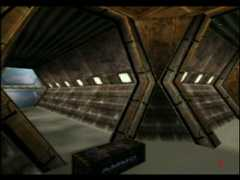
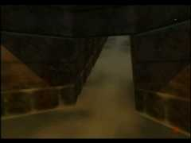
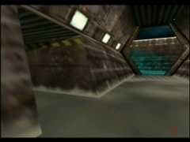
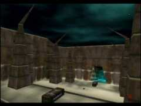
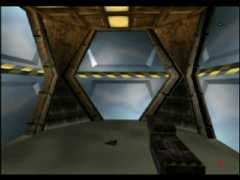
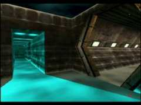
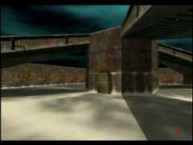

|
| Perfect
Dark : Zone 52 |
| Un
Niveau alternant grands espaces, couloirs et salles spécifiques, un
peu comme Skedar mais sur un seul niveau, ce qui rend l'orientation
bien plus facile. De très bons endroits occupent ce niveau. Tout d'abord
la Grande Salle avec les Tourelles, rappelant celle de Skedar (décidément)
avec l'arme au milieu, les 4 échappatoires possibles, la possibilité
de Sniper du haut des tourelles, avec ici en plus un piège vicieux :
la petite douve circulant autour de l'Obélisque.
On ne peut en sortir que par 2 petites échelles, ce qui complique
pas mal les choses, et on ne peut partir de cet îlot" que par
un mince pont. Du bon travail, surtout que la meilleure arme est souvent
sur l'îlot. |
 |
 |
 |
 |
 |
 |
Deux grandes salles viennent en plus : celle en pente, avec ces pointes crochues, et l'autre plus classique, avec les portes coulissantes sur ses flancs. Ces petites salles sont sympathiques, surtout celle en pente, qui ravira le Campeur… Il y a des couloirs, comme dans tous les Niveaux, reliant diverses parties de l'Arène, avec en prime des petits conduits (dont un où se situe une arme ou un bouclier) et des portes coulissantes vicieuses, qui se ferment juste quand on tire une roquette ! |
 |
 |
 |
Enfin, la très bonne trouvaille de La Zone 52 est certainement ses 2 Petites Maisons bien utiles pour se retrouver ou se planquer comme un Rat. Il y a la Maison Bleue, assez dure à garder dans la mesure ou l'on peut briser ses vitres et tuer l'occupant directement à l'intérieur. Et puis il y a La Petite Maison Dans La Prairie avec ses 4 Poutres d'Acier la rendant vite identifiable. Cette maison est plus simple à garder, puisque les vitres sont ici des herses métalliques, et qu'il faut d'abord les ouvrir pour tirer. |
 |
 |
 |
Comme d'habitude, faites gaffe aux grands espaces ; et dans les longs couloirs méfiez-vous des Simulants en Roquettes, car ils n'auront aucun remords à se suicider, histoire de tuer quelqu'un. Les tourelles sont pratiques, puisque les Simulants n'y vont quasiment jamais (sauf en Cas de Valise) et permettent de bonnes rasades de Plomb. Comme je le disais plus haut, La Petite Maison (…Dans La Prairie ) est bien puisque les Simulants n'ouvriront jamais les fenetres et viendront tranquillement se faire tuer à l'entrée. En revanche, la Maison Bleue est une zone à risques ! Les Simulants cassent les vitres comme pas permis ! Comme pour Skedar, toutes les Armes se valent, le niveau étant bien équilibré Grands Espaces / Petits Couloirs… |
 |
 |
 |
Le Campeur restera dans La Petite Maison avec Charles Ingalls puisqu'il fait froid aux alentours (et qu'il n'y a plus de bois à couper)… Des Mines ou une Arme braquée sur la Porte feront très bien l'affaire. Une fois de plus, le Farsight est de rigueur. Une tourelle avec une pleine provision de Grenades ou Roquettes convient également très bien au Campeur. Les petits recoins situés dans les couloirs Jaunes juste entre La Prairie et La Grande Salle sont aussi un excellent butoir pour simulants ou joueurs. Et le Campeur pris de panique pourra toujours se réfugier chez Charles Ingalls. |